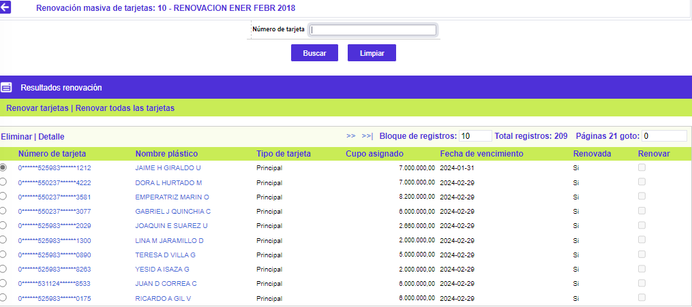
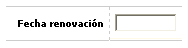

Variación masiva de cupos
Resultados para renovación: Luego de ser evaluados los criterios de selección, en esta carpeta se muestra el producto de dicha selección.
El formulario contiene los enlaces: Eliminar y Detalle. Adicionalmente, cuenta en la parte superior con dos opciones, una para Renovar tarjetas las tarjetas que hayan sido seleccionadas, y otra para Renovar todas las tarjetas. También cuenta con un botón para volver a la opción anterior.

Número de tarjeta |
Muestra el número de producto que ha cumplido con los criterios de selección, como candidatos al proceso de variación de cupo. |
Realce |
Corresponde al nombre del titular del producto correspondiente al número de tarjeta anterior. |
Tipo tarjeta |
Indica la clase de producto sobre el que se efectuará el proceso de renovación, es decir, si éste se efectuará sobre las tarjetas principales o adicionales (extendidas o amparadas). |
Cupo asignado |
Corresponde al cupo asignado del producto candidato al proceso de renovación masiva. |
Fecha de vencimiento |
Informa acerca de la fecha de vencimiento del producto seleccionado de acuerdo con los criterios definidos. |
Renovada |
Una vez que la totalidad de las tarjetas de la lista han sido renovadas, esta casilla se marca automáticamente y no permite seleccionar para renovación ninguna de las tarjetas allí contenidas. Si la entidad posteriormente desea renovar la totalidad o alguno de los registros contenidos en esa lista, ésta se invoca siguiendo el procedimiento de consulta arriba señalado, se desmarca este campo y se graba; después de efectuada la modificación pueden volver a renovarse los registros allí contenidos. |
Renovar |
En este campo la entidad selecciona del resultado de la aplicación de criterios los productos que desea entren al proceso de renovación masiva. |
Detalle: Si el usuario invoca la opción Detalle se despliega el siguiente formulario.

Bloqueo saldo |
Muestra el bloqueo que posee cada uno de los productos por dicho concepto una vez aplicados los criterios de selección. |
Bloqueo reestructuración |
Registra el bloqueo que posee cada uno de los productos por dicho concepto una vez aplicados los criterios de selección. |
Bloqueo plástico |
Señala el bloqueo que posee cada uno de los productos por dicho concepto una vez aplicados los criterios de selección. |
Bloqueo sobrecupo |
Indica el bloqueo que posee cada uno de los productos por dicho concepto una vez aplicados los criterios de selección. |
Bloqueo cliente |
Muestra el bloqueo que posee cada uno de los productos por dicho concepto una vez aplicados los criterios de selección. |
Error |
En el caso de que los productos seleccionados de acuerdo con los criterios hayan sido candidatos pero no pudieron ser variados sus cupos exitosamente, en este campo aparece el motivo. |
Renovar tarjetas: Aplica la renovación masiva en la base de datos, sólo de las tarjetas seleccionadas; despliega una pantalla en la cual se solicita como parámetro el mes y año para bloquear por no renovación, todas aquellas tarjetas que no están en la lista y cuya fecha de vencimiento sea menor o igual al parámetro indicado.
Si se invoca el botón Renovar todas las tarjetas, el sistema tiene en cuenta el total de tarjetas encontradas en el formulario, sin importar si están seleccionadas o no.
El formulario cuenta en la parte superior con la opción para volver al formulario de Resultados, y un botón en la parte inferior para Renovar las tarjetas.

Renovar tarjetas: A través de este botón se aplica la renovación masiva en la base de datos, de las tarjetas seleccionadas o de todas las tarjetas, de acuerdo a la opción que se haya seleccionado.